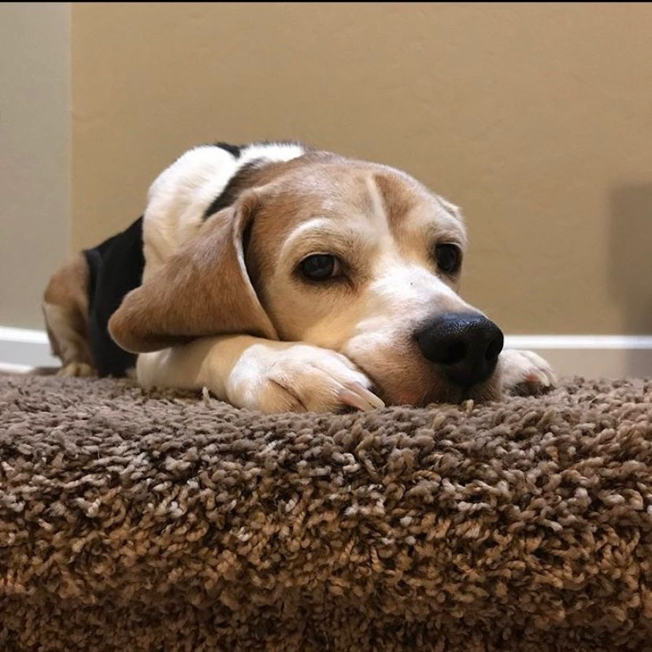

Originally from Los Angeles, Tucson has been my on- and off- and on-again home for 20 years now. With degrees in journalism (B.A. 2005) and business (M.B.A. 2010) from the University of Arizona, I consider myself immensely privileged to be able to work each day with hundreds of dedicated students as director of Arizona Student Media – the UA department that oversees and supports the operation of the 121-year-old Arizona Daily Wildcat, UATV-3 student television, and KAMP Student Radio. I live near campus with my wife, Lindsey (also a UA alumna and my favorite on-campus coworker!) and our beagle, Mayhem (he’s actually sweet and well-behaved, and rarely lives up to his name).